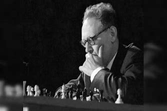

Mikhail Botvinnik
Mikhail Botvinnik nasceu no Grão-ducado da Finlândia, então parte do Império Russo, na localidade de Kuokkala (atualmente chamada Repino). Sua primeira grande aparição no mundo do xadrez foi aos 14 anos, quando derrotou o campeão mundial José Raúl Capablanca.
Aos 20 anos, Botvinnik já era um mestre soviético consagrado, vencendo pela primeira vez o Campeonato Soviético em 1931. Ele repetiu esse feito em 1933, 1939, 1941, 1945 e 1952. Aos 24 anos, já competia de igual para igual com a elite mundial, acumulando sucessos internacionais, incluindo vitórias em Moscou (1935) e Nottingham (1936), além do prestigiado terceiro lugar no torneio AVRO de 1938.
Botvinnik foi campeão mundial em três períodos distintos: 1948-1957, 1958-1960 e 1961-1963. Sua longevidade no topo do xadrez mundial é atribuída ao seu método meticuloso de estudo e preparação, priorizando técnica e precisão em vez de jogadas intuitivas. Ele adotou e desenvolveu linhas sólidas de abertura na Nimzo-Indiana, Defesa Eslava e Defesa Francesa, garantindo um repertório confiável em seus matches mais importantes.
Apesar de raramente competir após a Segunda Guerra Mundial, Botvinnik ainda é lembrado como um dos maiores jogadores da história. Embora alguns críticos apontem que suas partidas eram mais baseadas em precisão do que em criatividade, outros, como o mestre Reuben Fine, destacam a beleza de suas melhores partidas.
Nos anos 1960, Botvinnik deixou a competição para se dedicar ao desenvolvimento de programas de xadrez para computadores e ao treinamento de novos jogadores. Entre seus alunos mais famosos estão os três "K’s" soviéticos: Anatoly Karpov, Garry Kasparov e Vladimir Kramnik.
Sua autobiografia, "Achieving the Aim", foi publicada em russo em 1978 e traduzida para o inglês em 1981, sendo uma obra essencial para quem deseja conhecer sua trajetória e abordagem no xadrez.